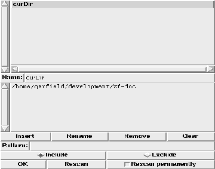

This procedure pops up the globals handling dialog. This dialog provides access to the global variables.

Figure: The procedure XFProcProgGlobals
The upper list shows all global variables. By clicking on a name, the name and the current value are inserted into the two fields below the list.
To restrict the displayed variables to a subset, a pattern can be specified. This pattern can be used to include matching variables, or to exclude them.
The buttons at the bottom of the dialog control the changing of the global variables. The insert button creates a global variable with the current name containing the current value. The rename button pops up a dialog box where the new name can be entered. The remove button removes the current variable, and the clear button clears the text fields. The remaining buttons at the bottom control the rescan of the variables, and allow the termination of the dialog.